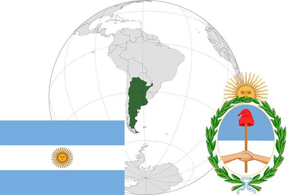

To`liq nomi: Argentina Respublikasi
Region: Janubiy Amerika
Qonunchilik shakli: Federativ Respublika
Mustaqillik kuni: 9 iyul 1816 yil Ispaniyadan
Poytaxti: Buenos Ayres
Maydoni: 2 780 400 km² (dunyoda 8 -o`rinda )
Chegaradosh davlatlari: Boliviya, Paragvay, Braziliya, Urugvay, Chili
Aholisi: 43,417,000 (dunyoda 32 -o`rinda ) 2015-yil roʻyxat
Aholi zichligi: 14.4 /km²
Aholining o`rtacha yoshi: 76,4 yil ( 80,2 ayollar, 72,6 erkaklar)
Rasmiy tili: Ispan tili
Dini: Katolizm
Pul birligi: Argentine Peso (ARS)
Telefon prefiksi: +54
Internet domen: .ar
Xalqaro tashkilotlarga a`zoligi: BMT (1945 -yildan)
Dengiz va okeanlarga chiqishi: Atlantika okeani
YIM: Butun: $ 964.279 milliard, Jon boshiga: $ 22,375 (2015 - yil roʻyxati)
Yirik shaharlari: Buenos Ayres, Kordova, Rosario, Mendosa, La-Plata